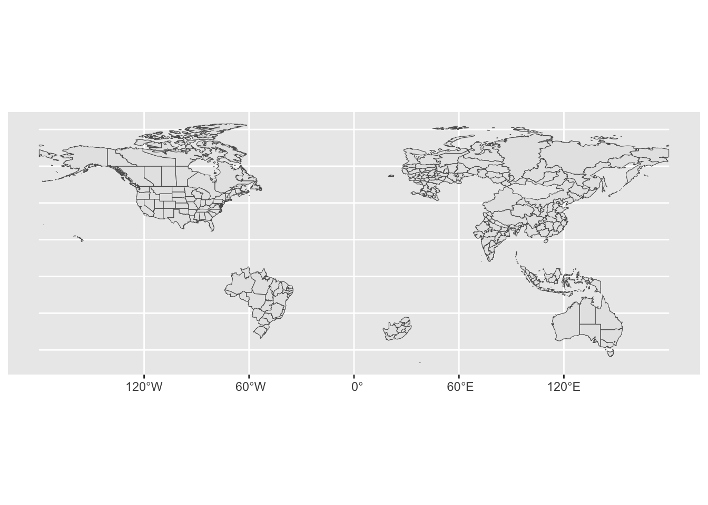
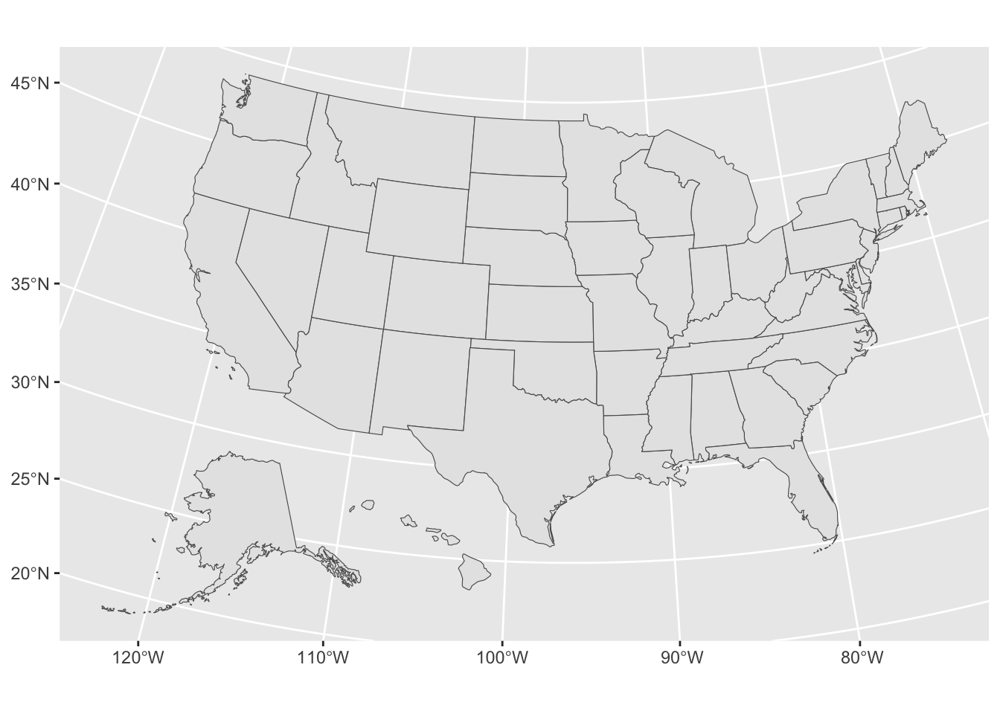
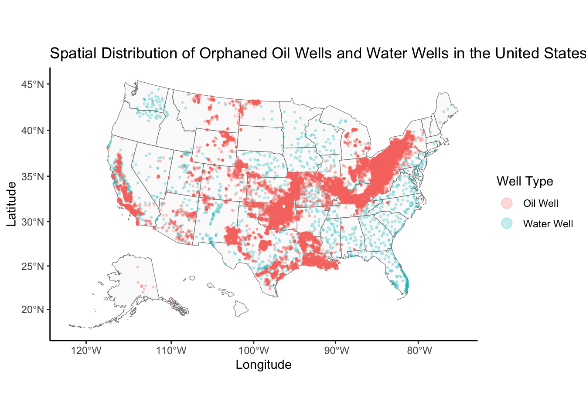
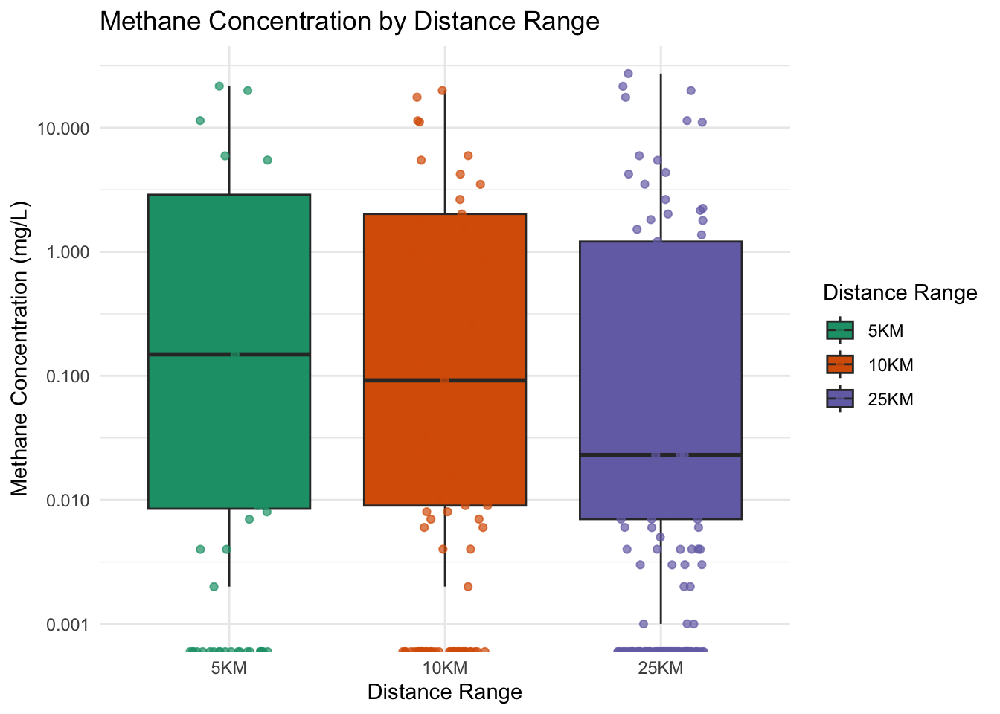
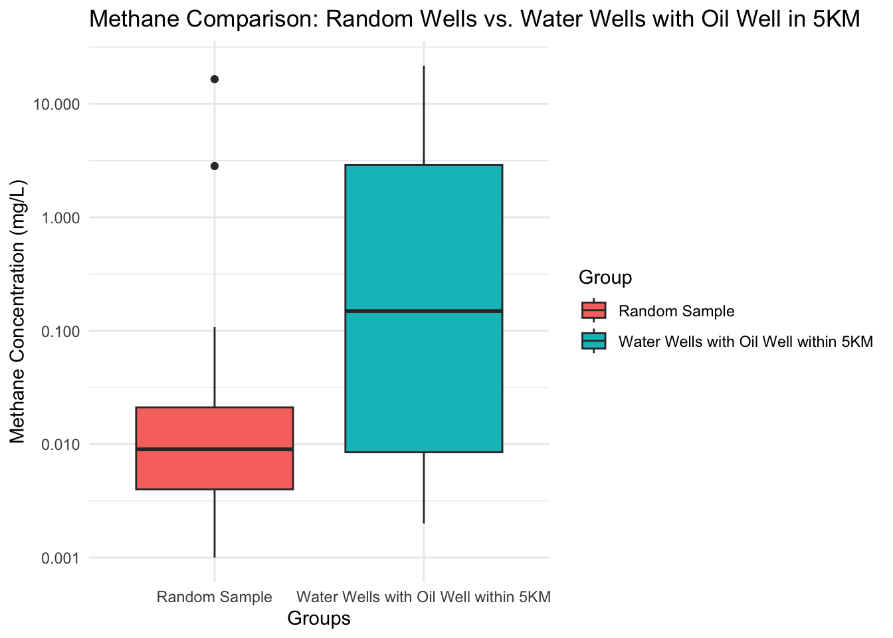

Orphaned oil wells are abandoned without proper remediation. I was drawn to this topic because I was interested in water sanitation. When I learned that there was very little accurate data on abandoned oil well I considered the research question: Does proximity to orphaned oil wells correlate with increased methane contamination in U.S. aquifers?
Methane contamination of groundwater poses significant environmental and public health concerns, particularly in regions with high densities of oil wells. Orphaned oil wells—abandoned without remediation—represent a potential source of methane pollution, but the extent of their impact on water wells remains uncertain. Understanding this relationship can inform remediation strategies and policy decisions. According to Peter McMahon, methane poses an increased risk as an explosion hazard.
This project utilizes data from three primary sources: the Biden-Harris Administration press release on orphaned oil wells funding, the Environmental Science & Technology publication detailing methane contamination in drinking water wells, and the USGS dataset documenting unplugged orphaned oil and gas wells. The methane concentration data includes measurements collected from drinking water wells across various aquifers, with each sample containing geographic coordinates and methane levels in parts per million (ppm). The orphaned oil well dataset provides geospatial information, including latitude, longitude, and well status, for orphaned wells across the United States. The methane data is formatted as a CSV file, while the oil well data is provided in shapefiles for geographic information system (GIS) analysis.
To prepare the data, methane measurements and orphaned well locations were imported and harmonized by converting all coordinates to a common spatial reference system (EPSG:4326). Using a nearest-neighbor spatial join, each water well was matched with its closest orphaned oil well, and the distance between the two was calculated in kilometers. Proximity thresholds of 5 km, 10 km, and 25 km were used to segment the data for further analysis.
Importing and Wrangling the Data
To begin, we import the necessary data sets, convert them into spatial data, and ensure compatibility.
# Setting Up Our Environmentlibrary(tidyverse)
── Attaching core tidyverse packages ──────────────────────── tidyverse 2.0.0 ──
✔ dplyr 1.1.4 ✔ readr 2.1.5
✔ forcats 1.0.0 ✔ stringr 1.5.1
✔ ggplot2 3.5.1 ✔ tibble 3.2.1
✔ lubridate 1.9.3 ✔ tidyr 1.3.1
✔ purrr 1.0.2
── Conflicts ────────────────────────────────────────── tidyverse_conflicts() ──
✖ dplyr::filter() masks stats::filter()
✖ dplyr::lag() masks stats::lag()
ℹ Use the conflicted package (<http://conflicted.r-lib.org/>) to force all conflicts to become errors
library(sf)
Linking to GEOS 3.11.0, GDAL 3.5.3, PROJ 9.1.0; sf_use_s2() is TRUE
library(nngeo)library(ggplot2)library(tigris)
To enable caching of data, set `options(tigris_use_cache = TRUE)`
in your R script or .Rprofile.
library(viridis)
Loading required package: viridisLite
# This line makes numbers display normally instead of scientific notation# (e.g., 10000 instead of 1e+04)options(scipen=999)# Tell R where to find our project filessetwd("/Users/rolandojrrabines/Desktop/Final.Project")# Import our datasets:# DerelictOilWell: locations of abandoned oil wells# WaterWell: locations of water wells# ContaminationData: methane measurements from water wells# allStates: map data for US statesDerelictOilWell <-read.csv("data/DerelictWell.csv")WaterWell <-read.csv("data/CoordinateData.csv")ContaminationData <-read.csv("data/McMahon_Methane_in_US_Aquifers_Table1.csv")allStates<-st_read("data/ne_50m_admin_1_states_provinces.shp")
Reading layer `ne_50m_admin_1_states_provinces' from data source
`/Users/rolandojrrabines/Desktop/Final.Project/data/ne_50m_admin_1_states_provinces.shp'
using driver `ESRI Shapefile'
Simple feature collection with 294 features and 121 fields
Geometry type: MULTIPOLYGON
Dimension: XY
Bounding box: xmin: -180 ymin: -46.96289 xmax: 180 ymax: 83.11611
Geodetic CRS: WGS 84
Converting to Spatial Dataframes
# Creating Maps# First, let's make a basic map of all statesggplot()+geom_sf(data=allStates)

# Create a new dataset with just the 50 US states (no territories)# diss_me values 3513:3563 represent the 50 statesfiftyStates<-allStates %>%filter(diss_me %in%c(3513:3563))# Adjust Alaska and Hawaii's position on the map to make it look better# This moves them below the continental USfiftyStatesShifted<-shift_geometry(fiftyStates,position=c("below"))# Plot our new, adjusted mapggplot()+geom_sf(data=fiftyStatesShifted)

# Convert our well data into special spatial objects that R can plot on maps# We use the longitude and latitude to place themWaterWellData <-st_as_sf(WaterWell, coords =c("Adj_DD_Long", "Adj_DD_Lat"), crs =4326)OilWellData <-st_as_sf(DerelictOilWell, coords =c("Longitude", "Latitude"), crs =4326)
Mapping Spatial Data
We are going to do is map each data set spatially using the point geometry. We can evaluate if the wells and oil rigs have a reasonable amount of overlap spatially by plotting the points.
# Chunk 3 - Creating a Combined Map of Wells# Combine our water and oil well data into one dataset# We add a 'Type' column to distinguish between themcombined_data1 <-bind_rows( WaterWellData %>%mutate(Type ="Water Well"), OilWellData %>%mutate(Type ="Oil Well"))# Convert the combined data into a spatial formatcombined_data_sf <-st_as_sf( combined_data1,coords =c("X", "Y"),crs =4326# This is the standard coordinate system for GPS data)# Create a beautiful map showing both types of wellsggplot() +# Draw the US map in the backgroundgeom_sf(data = fiftyStatesShifted, fill ="gray90", color ="gray50", alpha =0.2, size =0.3) +# Add points for each well, colored by typegeom_sf(data = combined_data_sf, aes(color = Type), size =0.5, alpha =0.25) +# Make the map pretty with colors and labelsscale_fill_viridis_d(option="viridis") +labs(color ="Well Type",title ="Spatial Distribution of Orphaned Oil Wells and Water Wells in the United States",x ="Longitude",y ="Latitude" ) +# Make the legend points bigger so they're easier to seeguides(color =guide_legend(override.aes =list(size =4))) +theme_classic() +coord_sf()

Proximity Analysis: Filtering Mapping for Wells within 1km
# Finding Nearby Wells# Find water wells that are within 1000 meters (1km) of oil wellsNearest <-st_nn(OilWellData, WaterWellData, maxdist =1000, returnDist =TRUE)
# Get the information about which wells are close to each othernearest_WW_row <-unlist(Nearest$nn)distances <-unlist(Nearest$dist)# Create a dataset of just the water wells within 1km of oil wellswater_wells_within_1km <- WaterWellData[unique(nearest_WW_row), ]
Aligning Methane Study, Oil Well, and Water Well data
By linking methane concentration data with spatial water well data, we can analyze how proximity to oil wells correlates with methane levels in water wells.
Methods:
The analysis involved both spatial and statistical techniques. Data wrangling was performed to prepare the datasets for analysis. In the McMahon study, titled “Methane in Aquifers Used for Public Supply in the United States,” methane values in Table 1 were adjusted from “<.001” to 0.0 to standardize the data. Additionally, coordinates in the Grove dataset, “United States Documented Unplugged Orphaned Oil and Gas Well Dataset,” were adjusted to reflect the shift in the U.S. map, ensuring proper alignment for visualization.
Spatial analysis was conducted by linking water wells to their nearest orphaned oil wells and calculating proximity, with data filtered for specific distance ranges. Methane concentration variability across proximity thresholds was assessed to explore potential trends. Statistical analysis included Spearman’s correlation to evaluate the strength and direction of the relationship between proximity and methane levels, and the Mann-Whitney U test to compare methane concentrations between wells located within 5 km and those farther away. These analyses were complemented by visualization techniques to illustrate methane concentrations and box-and-whisker plots to summarize methane variability across proximity ranges.
# Chunk 5 - Combining Well and Contamination Data# Add methane concentration data to our nearby water wellswater_wells_within_1km <-as.data.frame(st_coordinates(water_wells_within_1km)) %>%# Rename coordinates to match our original datarename(Adj_DD_Long = X, Adj_DD_Lat = Y) %>%# Join with water well IDsleft_join(WaterWell %>%select(Well.id, Adj_DD_Long, Adj_DD_Lat), by =c("Adj_DD_Long", "Adj_DD_Lat")) %>%# Add methane concentration dataleft_join( ContaminationData %>%select(NAWQA.ID, Methane) %>%rename(Well.id = NAWQA.ID),by ="Well.id")# Make sure methane values are treated as numberswater_wells_within_1km$Methane <-as.numeric(water_wells_within_1km$Methane)
# Visualizing and Describing Relationships# Match coordinates to Well.id for filtered water wellswater_well_coords <- water_wells_within_1km %>%select(Well.id, Adj_DD_Long, Adj_DD_Lat)# Join with contamination data to get methane valuescombined_data <- water_well_coords %>%left_join( ContaminationData %>%select(NAWQA.ID, Methane) %>%rename(Well.id = NAWQA.ID),by ="Well.id" )# Ensure Methane is numeric, replacing non-numeric entries with NAcombined_data$Methane <-as.numeric(combined_data$Methane)combined_data$Methane[is.na(combined_data$Methane)] <-0# Let's see what our cleaned data looks likecombined_data
Visualization of Methane Concentration Distributions by Distance Range
# Prepare data for box plots# Define distance rangesmax_distances <-c(5000, 10000, 25000)distance_labels <-c("5KM", "10KM", "25KM")# Create a tibble with range informationdistance_ranges <-tibble(max_dist = max_distances,min_dist =c(0, max_distances[-length(max_distances)]),label = distance_labels)# Extract distances and indices of nearest water wellsnearest <-st_nn(OilWellData, WaterWellData, maxdist =max(max_distances), returnDist =TRUE)
nearest_WW_row <-unlist(nearest$nn)nearest_distances <-unlist(nearest$dist)# Create distance range conditions and process dataprocess_distance_range <-function(i) {# Create lower and upper bounds for ranges lower_bounds <-c(0, max_distances[-length(max_distances)])# Define filter condition using vector operations filter_condition <- nearest_distances > lower_bounds[i] & nearest_distances <= max_distances[i]# Get water wells within the current range water_wells_within_dist <- WaterWellData[unique(nearest_WW_row[filter_condition]), ]# Convert to coordinates dataframe coords_df <-as.data.frame(st_coordinates(water_wells_within_dist))names(coords_df) <-c("Adj_DD_Long", "Adj_DD_Lat")# Get Well.id from WaterWell data water_well_subset <- WaterWell[, c("Well.id", "Adj_DD_Long", "Adj_DD_Lat")] merged_data <-merge(coords_df, water_well_subset, by =c("Adj_DD_Long", "Adj_DD_Lat"))# Get Methane data contamination_subset <- ContaminationData[, c("NAWQA.ID", "Methane")]names(contamination_subset)[names(contamination_subset) =="NAWQA.ID"] <-"Well.id" filtered_data <-merge(merged_data, contamination_subset, by ="Well.id")# Drop NA values and re-convert Methane vector to numeric filtered_data <- filtered_data[!is.na(filtered_data$Methane), ] filtered_data$Methane <-as.numeric(filtered_data$Methane) filtered_data$DistanceRange <- distance_labels[i]return(filtered_data)}# Apply function to all distance ranges and combine resultscombined_distance_data <-do.call(rbind, lapply(seq_along(max_distances), process_distance_range))
Warning in FUN(X[[i]], ...): NAs introduced by coercion
Warning in FUN(X[[i]], ...): NAs introduced by coercion
# Ensure DistanceRange is a factor with the correct ordercombined_distance_data$DistanceRange <-factor( combined_distance_data$DistanceRange,levels = distance_labels)# Create Box and Whisker plot# Set colors to be red, purple, and green# Jitter the points# Use a logarithmic scaleggplot(combined_distance_data, aes(x = DistanceRange, y = Methane, fill = DistanceRange)) +geom_boxplot() +# Box plot with whiskersgeom_jitter(aes(color = DistanceRange), width =0.2, size =1.5, alpha =0.7) +scale_fill_brewer(palette ="Dark2", name ="Distance Range") +scale_color_brewer(palette ="Dark2", name ="Distance Range") +labs(title ="Methane Concentration by Distance Range",x ="Distance Range",y ="Methane Concentration (mg/L)" ) +ylim(0.000000001, 30) +scale_y_log10() +theme_minimal()
Scale for y is already present.
Adding another scale for y, which will replace the existing scale.
Warning in scale_y_log10(): log-10 transformation introduced infinite values.
Warning in scale_y_log10(): log-10 transformation introduced infinite values.
Warning: Removed 142 rows containing non-finite outside the scale range
(`stat_boxplot()`).
Warning: Removed 4 rows containing missing values or values outside the scale range
(`geom_point()`).

# Visualization #3 # Group 1: Water wells with oil wells within 5KMnearest_5km <-st_nn(OilWellData, WaterWellData, maxdist =5000, returnDist =TRUE)
nearest_5km_row <-unlist(nearest_5km$nn)# Filter water wells within 5KMwater_wells_within_5km <- WaterWellData[unique(nearest_5km_row), ]# Add methane concentrationsgroup_1 <-as.data.frame(st_coordinates(water_wells_within_5km)) %>%rename(Adj_DD_Long = X, Adj_DD_Lat = Y) %>%left_join(WaterWell %>%select(Well.id, Adj_DD_Long, Adj_DD_Lat), by =c("Adj_DD_Long", "Adj_DD_Lat")) %>%left_join( ContaminationData %>%select(NAWQA.ID, Methane) %>%rename(Well.id = NAWQA.ID),by ="Well.id" ) %>%filter(!is.na(Methane)) %>%mutate(Group ="Water Wells with Oil Well within 5KM")# Group 2: Random sample of 100 water wellsset.seed(123) # For reproducibilitygroup_2 <- WaterWell %>%sample_n(100) %>%left_join( ContaminationData %>%select(NAWQA.ID, Methane) %>%rename(Well.id = NAWQA.ID),by ="Well.id" ) %>%filter(!is.na(Methane)) %>%mutate(Group ="Random Sample")# Combine groupscombined_data <-bind_rows(group_1, group_2)# Ensure Methane is numericcombined_data <- combined_data %>%mutate(Methane =as.numeric(Methane))# Create box plot with adjusted y-axis# Darker fill colors for box plot# Highlight outliers# Add jittered points# Darker colors for jittered pointsggplot(combined_data, aes(x = Group, y = Methane, fill = Group)) +geom_boxplot() +scale_color_viridis_d(option ="viridis") +labs(title ="Methane Comparison: Random Wells vs. Water Wells with Oil Well in 5KM",x ="Groups",y ="Methane Concentration (mg/L)" ) +scale_y_log10() +theme_minimal()
Warning in scale_y_log10(): log-10 transformation introduced infinite values.
Warning: Removed 37 rows containing non-finite outside the scale range
(`stat_boxplot()`).

Hypothesis Testing - Comparing Methane Levels
Let’s perform a Mann-Whitney U statistical test to compare methane levels between wells within 5KM of oil wells and a random sample of one hundred water wells.
# Create groups for Mann-Whitney test# Group 1: Wells within 5km of oil wellswells_near_oil <- combined_distance_data[combined_distance_data$DistanceRange =="5KM", ]wells_near_oil$Group <-"Near Oil Wells"# Group 2: Wells not within 5kmwells_far_from_oil <- combined_distance_data[combined_distance_data$DistanceRange !="5KM", ]wells_far_from_oil$Group <-"Far from Oil Wells"# Combine the groupstest_data <-rbind(wells_near_oil, wells_far_from_oil)# Chunk 10# Perform a Mann-Whitney U testtest_result <-wilcox.test( Methane ~ Group,data = test_data,alternative ="greater")# Print test resultsprint(test_result)
Wilcoxon rank sum test with continuity correction
data: Methane by Group
W = 4611.5, p-value = 0.5084
alternative hypothesis: true location shift is greater than 0
Correlation Analysis Between Methane Levels and Proximity
Calculate the correlation between methane concentrations and proximity to oil wells, providing a numerical metric for their relationship.
# Convert DistanceRange to a numeric variable for correlation analysiscombined_distance_data$DistanceRange_numeric <-as.numeric(as.factor(combined_distance_data$DistanceRange))# Perform a Spearman rank correlation testcorrelation_result <-cor.test(combined_distance_data$DistanceRange_numeric, combined_distance_data$Methane, method ="spearman")
Warning in cor.test.default(combined_distance_data$DistanceRange_numeric, :
Cannot compute exact p-value with ties
# Print test resultsprint(correlation_result)
Spearman's rank correlation rho
data: combined_distance_data$DistanceRange_numeric and combined_distance_data$Methane
S = 3362518, p-value = 0.8222
alternative hypothesis: true rho is not equal to 0
sample estimates:
rho
-0.01371048
Conclusions
The weak correlation suggests proximity to orphaned oil wells alone does not determine methane contamination risk. This indicates the need for further research into factors such as geological conditions and well integrity. Policymakers should consider prioritizing regions with many abandoned oil wells. for remediation efforts to mitigate potential contamination risks.
References
The White House. (2023, November 29). Biden-Harris Administration invests $660 million to plug orphaned oil and gas wells.Press Release.
McMahon, P., et al. (2017). Methane and Benzene in Drinking-Water Wells Overlying Shale Hydrocarbon Production Areas. Environmental Science & Technology, 51(12), 6954–6963. DOI.
Grove, C. A., & Merrill, M. D. (2022). United States Documented Unplugged Orphaned Oil and Gas Well Dataset. U.S. Geological Survey. Dataset.